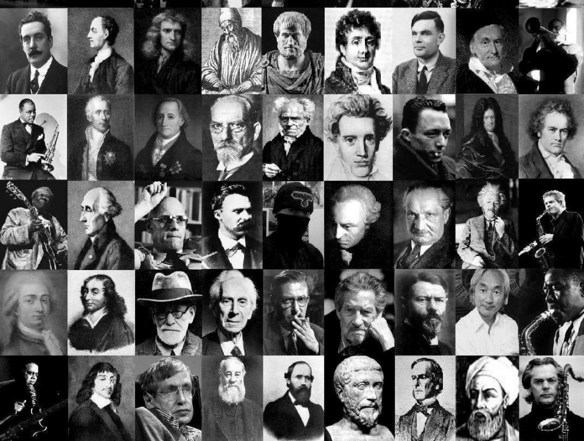

La filosofía (del griego antiguo ‘amor a la sabiduría’ derivado de [filein] ‘amar’ y [sofía] ‘sabiduría’; trans. en latín como philosophia) es el estudio de una variedad de problemas fundamentales acerca de cuestiones como la existencia, el conocimiento, la verdad, la moral, la belleza, la mente y el lenguaje.
Al abordar estos problemas, la filosofía se distingue del misticismo, el esoterismo, la mitología y la religión por su énfasis en los argumentos racionales sobre los argumentos de autoridad, y de la ciencia porque generalmente realiza sus investigaciones de una manera no empírica, sea mediante el análisis conceptual, los experimentos mentales, la especulación u otros métodos a priori, aunque sin desconocer la importancia de los datos empíricos.
La filosofía occidental ha tenido una profunda influencia y a su vez se ha visto profundamente influida por la ciencia, la religión y la política occidentales. Muchos filósofos importantes fueron a la vez grandes científicos, teólogos o políticos y algunas nociones fundamentales de estas disciplinas todavía son objeto de estudio filosófico. Esta superposición entre disciplinas se debe a que la filosofía es una disciplina muy amplia.
Las ramas y los problemas que componen la filosofía han variado mucho a través de los siglos. Con el tiempo, algunas ramas de la filosofía se han independizado y vuelto ciencias. Por ejemplo, en sus orígenes, la filosofía abarcaba el estudio de los cielos que hoy llamamos astronomía, así como los problemas que ahora pertenecen a la física. En la actualidad, la lógica está atravesando un proceso similar.